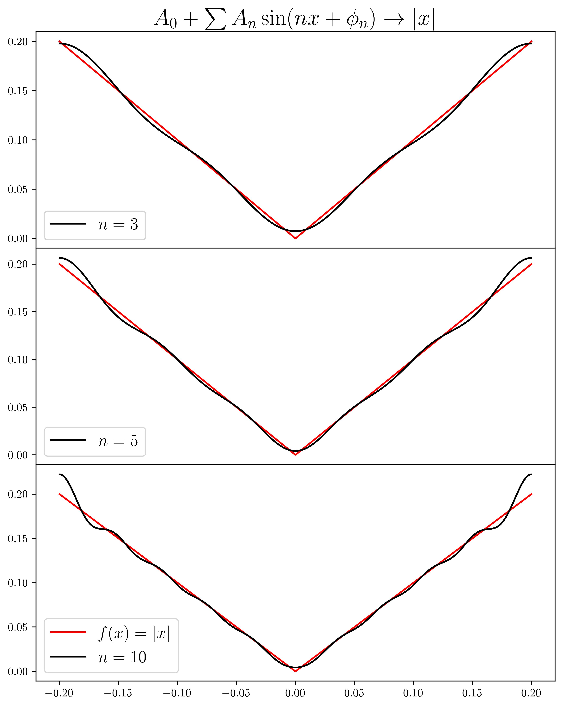
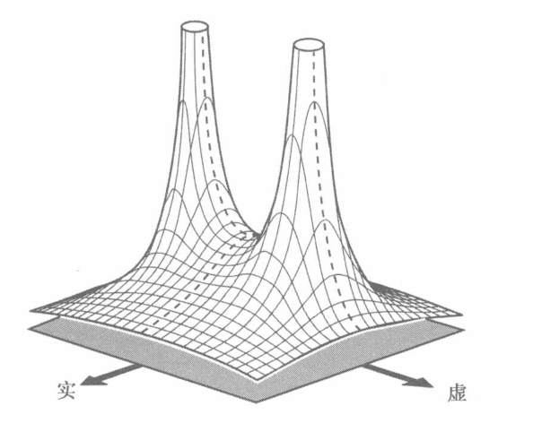
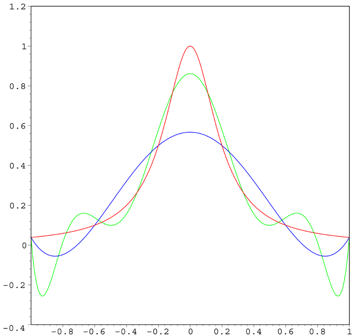
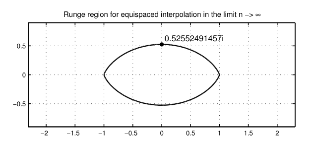

泰勒展开
本文梳理泰勒展开(Taylor expansion)及其相关内容，罗列一些常用的性质和公式以备不时之需。
主要内容如下:
- 泰勒定理及其余项
- 一点点傅里叶级数
- 魏尔斯特拉斯逼近定理
- 泰勒级数
- 更高观点: 复分析中的泰勒级数
- 一点点数值分析: 龙格现象
泰勒定理及其余项¶
泰勒定理
设\(n\)是一个正整数, 若定义在\(a\)的一个邻域上的函数\(f\)在\(a\)点\(n+1\)阶可微, 那么对于该邻域上任意一点\(x\)都有
$$
f(x)=f(a)+\frac{f'(a)}{1!}(x-a)+\frac{f^{(2)}(a)}{2!}(x-a)^2+\cdots+\frac{f^{(n)}(a)}{n!}(x-a)^n+R_n(x)
$$
注意, 定理中要求\(n+1\)阶可微性这个条件在特定的余项下可以放宽或者需要收紧, 其中\(R_n(x)\)称为泰勒公式的余项.
另外提一嘴, 泰勒全名Brook Taylor(1685-1731), 如果你直接在搜索引擎键入taylor, 恐怕会出现大量另外一位Taylor, 歌唱的不错的那位.
泰勒展开的想法非常简单, 就是寻找一个合适的多项式\(P_n(x)\)来近似函数的值. 那么我们自然产生下面两个问题:
为什么这样的多项式近似(总是)存在?¶
我们知道\(\left\{1,x,x^2,x^3,\cdots\right\}\)作为(有某些正则条件的,奇怪的函数不在考虑之列)函数空间这一无穷维线性空间的一组基, 它的近似能力或者说表示能力是无限的, 也就是说空间中任何一个函数都可以在这组基下找到一个线性表示.
特别的, 如果函数高阶可微的话, 那么表示系数正比于函数的各阶导数.
注意我说的是(空间内)任何一个函数, 并不要求函数的可微性. 只不过, 对于那些不可微的函数, 系数不能依靠导数来确定.
严格的来说, 有魏尔斯特拉斯第一逼近定理(多项式表述, 可以证明与三角函数的表述等价):
维尔斯特拉斯定理
对于定义在区间\([a,b]\)上的每个连续函数\(f(x)\)，存在一组多项式函数\(P_{n}(n=0,1,2,...)\)，当n趋向于无穷大时，近似于\([a,b]\)上具有一致收敛的\(f(x)\)，也就是说:
举一个特殊的例子 $$ f(x)=|x|=\max{-x,x} $$ 我们考虑这个函数在\(x=0\)附近的多项式近似, 显然\(f\)在\(x=0\)不可微. 但是我们知道这样一个事实 $$ \lim_{n\to\infty}\sqrt[n]{x^n+(-x)^n}=\max{x,-x}=|x| $$ 那么我们就可以用一个光滑函数 $$ \sqrt[n]{x^n+(-x)^n} $$ 来近似\(f\), 而这个光滑函数又可以用泰勒定理来展开. 我们就间接找到了一个多项式近似(渐进无偏的), 逼近过程如图：

作为类比, 我们可以用三角函数基\(\{1,\sin x, \cos x, \sin 2x, \cdots\}\)来表示任何一个函数(魏尔斯特拉斯第二逼近定理给出了这个结论), 这就成为常见的傅里叶级数, 逼近过程如图:

不过多项式基下的线性表示比起三角函数基要难求得多, 因为三角函数基具有正交性, 但是多项式基没有正交性. 在特定区间上我们可以进行施密特正交化从而得到一组正交基, 进而使用和傅里叶级数类似的方法求得各个基上的系数, 细节如下:
- \((-1,1)\)上的正交基(勒让德多项式) $$ \begin{aligned} \left\{P_n(x)\right\}_{n=0}^\infty=\left\{1,x,\frac{1}{2}(x^2-1),\frac{1}{2}(5x^3-3x),\cdots\right\} \end{aligned} $$
- 可以验证其中的多项式满足正交性且本身模非\(0\) $$ \int_{-1}^1P_m(x)P_n(x)dx=\frac{2}{2n+1}I(m=n) $$
- 对于特定函数\(f\), 求他和每个基的内积从而求得线性表示系数
$$
a_n = \int_{-1}^1P_n(x)f(x)dx
$$
不过似乎没人这么做. 一般我们只在高阶可微的函数上使用多项式基的线性表示, 也就是泰勒展开. 毕竟傅里叶级数更加好用!
 没有什么是傅里叶画不出来的^.^
没有什么是傅里叶画不出来的^.^
简单描述一下上面这个图的原理. 我们知道复数 $$ re^{i\theta}=r[\cos\theta + i\sin\theta] $$ 可以表示周长为\(r\)的圆周上的某一点,\(\theta\)表示从实轴正半轴逆时针旋转的角度, 在复平面上就是一个向量. 那么我们考虑若干个向量的线性组合 $$ r_1e^{i\theta_1(x)}+r_2e^{i\theta_2(x)}+r_3e^{i\theta_3(x)}+\cdots $$ 这可以视为一个参数曲线 $$ z=f(x)+ig(x) $$ 实部, 虚部分别求傅里叶级数表示.
\(x\)不断变化的过程中, 若干个向量的线性组合类似机械臂可以形成非常复杂的轨迹(从这一点可以看出傅里叶在工程领域一个重要的运用):

通过调整一系列的参数, 就可以拟合绝大多数的曲线了. 机械臂的节点越多, 自由度越高, 拟合能力越强, 对应于傅里叶级数的阶数越高, 近似程度越高.
有些跑题, 我们回到泰勒展开.
近似的程度如何?¶
泰勒展开的近似程度用余项(残差项)来描述, 常见的余项有三种。
Peano余项¶
$$ R_n(x)=o\left[(x-a)^n\right] $$ 其中\(o(\cdot)\)表示高阶无穷小. 这是粗略的一种余项.
证明¶
依据定义 $$ R_n(x) = f(x)-\sum_{i=1}^n \frac{f^{(i)}(a)}{i!}(x-a)^i $$ 显然\(R_n(a)=0\)并且\(R_n(x)\)在\(a\)的邻域上\(n\)次可微, 只要按照高阶无穷小的定义验证 $$ \lim_{x\to a}\frac{R_n(x)}{(x-a)^n}=0 $$ 使用\(n\)次洛必达法则立得 $$ \begin{aligned} &\lim_{x\to a}\frac{R_n(x)}{(x-a)^n}\\ \overset{n次}{==}&\lim_{x\to a}\frac{f^{(n)}(x)-f^{(n)}(a)}{n!} \end{aligned} $$ \(f\) 的\(n+1\)次可微性, 保证了\(f^{(n)}\)在\(a\)处的连续性, 因此上式为0.
实际上在Peano余项下, 定理的条件可以放宽至\(f\)满足\(n\)次可微, 这时候只能用\(n-1\)次洛必达法则(若用\(n\)次得到上面的式子, 无法求得极限): $$ \begin{aligned} &\lim_{x\to a}\frac{R_n(x)}{(x-a)^n}\\ \overset{n-1次}{==}&\lim_{x\to a}\frac{f^{(n-1)}(x)-f^{(n-1)}(a)-f^{(n)}(a)(x-a)}{n!(x-a)}\\ =&\frac{1}{n!}\lim_{x\to a}\left[\frac{f^{(n-1)}(x)-f^{(n-1)}(a)}{(x-a)}-f^{(n)}(a)\right] & \end{aligned} $$ 则根据导数的定义以及\(f\)的\(n\)阶可微性可得上式为0.
Lagrange余项¶
$$ R_n(x)=\frac{f^{(n+1)}(\theta)}{(n+1)!}(x-a)^{(n+1)} $$ 其中\(\theta\in (a,x)\)(当\(x\)小于\(a\)的时候换一下区间限即可, 所以我们不妨设\(a\lt x\))
证明¶
依据定义 $$ R_n(x) = f(x)-\sum_{i=1}^n \frac{f^{(i)}(a)}{i!}(x-a)^i $$ 考虑\(g(x)=(x-a)^{(n+1)}\),注意到\(g^{(i)}(a)=R_n^{(i)}(a)=0, \quad i=1,2,\cdots,n\)
那么由Cauchy中值定理 $$ \begin{aligned} &\frac{R_n(x)}{g(x)}\\ =&\frac{R_n(x)-R_n(a)}{g(x)-g(a)}\\ =&\frac{R^{(1)}_n(\theta_1)}{g^{(1)}(\theta_1)}\\ =&\frac{R^{(1)}_n(\theta_1)-R^{(1)}_n(a)}{g^{(1)}(\theta_1)-g^{(1)}(a)}\\ \vdots\\ =&\frac{R_n^{(n+1)}(\theta)}{g^{(n+1)}(\theta)}\\ =&\frac{f^{(n+1)}(\theta)}{(n+1)!} \end{aligned} $$ 其中\((a,x)\supset(a,\theta_1)\cdots\supset(a,\theta)\), 也即\(\theta \in (a,x)\).
积分余项¶
$$ R_n(x)=\int_a^x \frac{f^{(n+1)}(t)}{n!}(x-t)^ndt $$ 显然这个余项对\(f^{(n+1)}\)的可导性有一些要求.
证明¶
使用牛顿莱布尼茨公式: $$ \begin{aligned} &f(x)\\ =&f(a)+f(x)-f(a)\\ =&f(a)+\int_a^xf'(t)dt\\ \end{aligned} $$ 多次使用恒等式(分部积分) $$ \begin{aligned} &\int_a^xf'(t)dt\\ =&\int_a^xf'(t)d(t-x)\\ =&\left[(t-x)f'(t)\right]\mid_a^x-\int_a^x(t-x)f''(t)dt\\ =&(x-a)f'(a)+\int_a^x(x-t)f''(t)dt \end{aligned} $$ 即可证明.
显然对于那些只有有限阶可微性的函数, 可以有穷阶的泰勒展开.
那些无穷阶可微的函数,是否可以做"无穷阶"泰勒展开, 从而形成一个无穷级数呢?
答案是肯定的, 根据我们前面的函数空间的说法, 在多项式基下这样一个无穷级数总是存在的. 特别地, 当\(f\)无穷阶可微, 这个级数称为泰勒级数, 线性表示系数正比于该点各界导数.
泰勒级数¶
泰勒级数是一类特殊的函数项无穷级数---幂级数.
也即 $$ \sum_{n=0}^\infty \frac{f^{(n)}(a)}{n!}(x-a)^n $$ 众所周知幂级数拥有优良的性质---内闭一致收敛.
由此可以证明它在收敛域(除去边界点)\((a-R,a+R)\)内 - 和函数连续 - 和函数有连续的导数 - 和函数黎曼可积 - 级数可以逐项求导, 求导后收敛半径不变 - 级数可以逐项积分, 积分后收敛半径不变
需要特别注意边界点的收敛性.
下面这个定理正是泰勒定理在幂级数中的运用, 用余项的处处收敛性阐述了级数的收敛性
定理
若\(f:(a-R,a+R)\to\mathbb{R}\) 满足\(f\in C^\infty\),则\(f\)在\((-R,R)\)内能展开为幂级数的充分必要条件为 $$ \lim_{n\to \infty}R_n(x)=0,\quad \forall x\in(a-R,a+R) $$ 此处\(R\)即是收敛半径.
此外不难验证, 泰勒级数的系数是唯一的, 利用这一点我们可以完成某些证明.
特别的如果是在\(a=0\)展开的泰勒级数, 我们称之为麦克劳林级数, 一些常用的基本初等函数的麦克劳林级数列举如下:
- \(x\in(-1,1)\) $$ \frac{1}{1-x}=1+x+x^2+x^3+\cdots $$
- \(x\in \mathbb{R}\) $$ e^x=1+x+\frac{x^2}{2!}+\frac{x^3}{3!}+\cdots $$
- \(x\in \mathbb{R}\) $$ \sin x =x -\frac{x^3}{3!}+\frac{x^5}{5!}-\cdots $$
- \(x\in \mathbb{R}\) $$ \cos x=1-\frac{x^2}{2!}+\frac{x^4}{4!}-\cdots $$
- \(x\in (-1,1]\) $$ \ln(1+x) = x-\frac{x^2}{2}+\frac{x^3}{3}-\frac{x^4}{4}+\cdots $$
- \(x\in(-1,1)\) $$ (1+x)^a = 1+ax+\frac{a(a-1)}{2!}x^2+\frac{a(a-1)(a-2)}{3!}x^3+\cdots $$
- \(x\in(-1,1)\) $$ \arctan x = x-\frac{1}{3}x^3+\frac{1}{5}x^5-\cdots $$
- \(x\in(-1,1)\) $$ \arcsin x = x+\frac{1}{2}\frac{x^3}{3}+\frac{3!!}{2^33!}\frac{x^5}{5}+\cdots $$ 利用幂级数的逐项可导,逐项可积和上面这些公式. 我们还可以求出各种五花八门的级数.
复分析中的泰勒级数¶
我们再来看一下复数域下的泰勒级数. $$ f(z)=\sum_{n=0}^\infty\frac{f^{(n)}(z_0)}{n!}(z-z_0)^n $$ 以下给出几个论断 - 复变量函数的函数项幂级数和实数的幂级数性质类似, 都有很好的性质(Abel定理) - 幂级数的收敛半径就是展开点和最近的奇点之间的距离 - 所有的全纯函数无穷阶可微, 因而存在泰勒级数
我们重点来看收敛半径, 半径这个词在实数域内非常地别扭, 勉强理解为收敛区间\((a-R,a+R)\)的半径. 但还是不够自然.
如果在复数域内来看, 一切就顺理成章了, 还可以解释一些现象.
例如 $$ \begin{aligned} f(x)&=\frac{1}{1-x^2}=\sum_{n=0}^\infty x^{2n}\\ g(x)&=\frac{1}{1+x^2}=\sum_{n=0}^\infty (-1)^nx^{2n} \end{aligned} $$ 这两个泰勒级数的收敛半径都是\(1\).
\(f(x)\)非常的自然, 因为这个函数在\(\pm 1\)是间断点, 级数没法越过这个点收敛.
但是\(g(x)\)就很反常, 这个函数在整个实轴上都是良好定义的, 展开的级数却只在\((-1,1)\)内收敛.
这个现象只有在复平面上才能得到合理的解释: $$ g(\pm i) = \frac{1}{1+i^2}=\infty $$ 所以 $$ i,\quad -i $$ 是\(g\)的奇点(不解析点). 收敛圆周不能越过这个两个点, 换言之收敛半径被这个两个点控制, 所以收敛半径才是1.
更进一步, \(f\)和\(g\)在复变函数的观点下, 只是做了一个旋转变换\(g(z)=f(iz)\), 整个函数逆时针旋转\(\pi/4\).
他们的图像是同一个曲面, 收敛域被同一个尖尖控制.

如此一来, 我们在复平面上看到了一切的原因.
我们再给出一个通过复分析方法解决实数问题的例子, 来说明这种观点的启发性.
龙格现象¶
前面介绍了魏尔斯特拉斯逼近定理, 此定理一个重要的实践就是多项式插值. 和我们前面做的多项式逼近略有不同.
很像统计学里面总体模型和样本的差别. \(f\)的多项式逼近是总体的模型, 是直接从函数本身下手, 而如果我们拿到了\(f\)一些特定点的函数值, 则可以用这些点进行多项式插值, 用拟合的多项式来估计\(f\).
而龙格现象描述的就是在插值的过程中的一种错误行为导致的现象.
考虑以下龙格函数： $$ f(x)={\frac {1}{1+25x^{2}}} $$ 龙格发现如果使用\(\le n\)阶多项式\(P_{n}(x)\)在\(−1\)与\(1\)之间按照 $$ x_{i}=-1+(i-1){\frac{2}{n}},\quad i\in \left\{1,2,\dots ,n+1\right\} $$ 这样的等距点\(x_i\)进行插值, 那么在接近端点\(−1\)与\(1\)的地方插值结果就会出现大幅度的震荡.
可以证明，在多项式的阶数增高时插值误差甚至会趋向无限大：
下图红色为龙格函数,蓝色为5次多项式插值, 绿色为9次多项式插值.

这个现象乍看非常的诡异, 在实数范围内依然无法解释. 因为龙格函数是一个良好定义,处处光滑的函数, 这样一个好函数都不能在等距插值下收敛, 那么这个方法是不是完全错误了?
我们切换到复平面考虑这个问题.
可以证明, 当且仅当\(f\)在龙格区域解析的时候上述误差收敛到0, 龙格区域的边界满足方程 $$ \log4=\Re[(z+1)\log(z+1)-(z-1)\log(z-1)] $$ 也就是下图所示区域

所以龙格函数不能被等距插值多项式很好的逼近, 原因在于解析域不够大, 在龙格区域内有奇点\(\pm 0.2i\).
参考文献:
1、维基百科
2、王绵森编著《工科数学分析基础》第二版，高等教育出版社，【第四章】泰勒定理、函数项级数、无穷维分析等内容
3、齐民友译著《复分析可视化方法》，人民邮电出版社，【第二章】复变函数幂级数
4、Approximation Theory and Approximation Practice By Lloyd N. Trefethen，【Chapter 11-13】龙格现象及其详细解释 5、在B站看到过一个视频，讲过龙格现象的解释，内容也是参考上面这本书的：https://www.bilibili.com/video/BV1R44y177Jp
6、除了\(f(x)=|x|\)这个例子的两个插图是我本人绘制，其他都是网络截图。
此致。